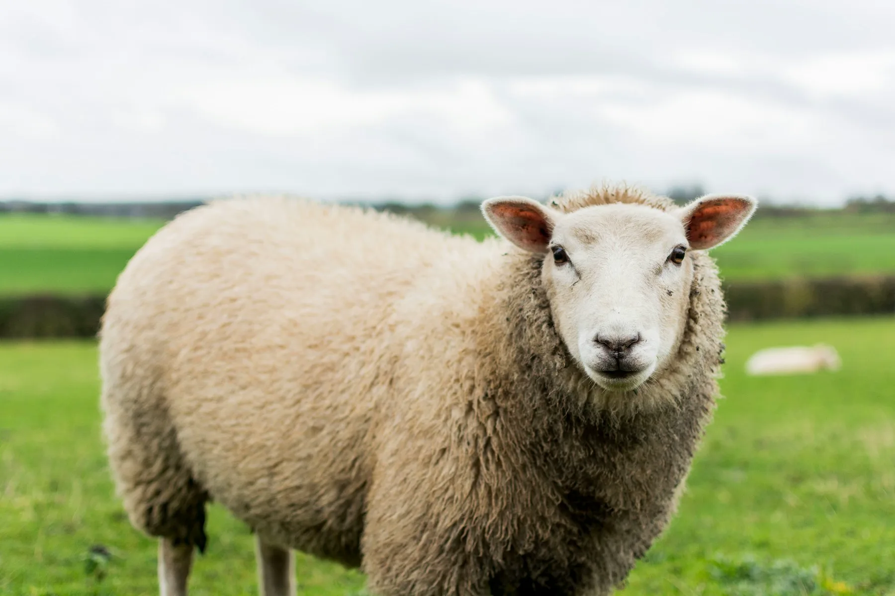

Pesagem e GMD
Registre o peso e veja o ganho médio diário de cada animal e de cada lote, sem fazer conta.

Ovis · Gestão de rebanhos ovinos para produtores de ovinos e equipes de fazenda.
*sem caderno de campo, sem planilha perdida.

Você sabe mais ou menos quantas cabeças tem. Mas qual matriz está vazia, quem ficou sem vermífugo e quanto o lote Aurora ganhou no mês? O Ovis lembra por você.
Total de ovinos, taxa de prenhez, ganho médio diário e crias por matriz já calculados na tela inicial. Logo abaixo, os manejos que estão vencendo — com um toque para concluir.
Números de demonstração do aplicativo.

Ficha do animal


Brinco, raça, idade e lote no topo. Peso atual, GMD e escore corporal em destaque. A curva de peso do nascimento até hoje e as abas de pesagem, reprodução e sanidade a um toque.
Manejos
Vacinação, vermifugação e pesagem aparecem por lote, com o que já venceu em vermelho e o que vence hoje em destaque. Fez? Toque em concluir e siga para o próximo.
Exemplo interativo com dados de demonstração.
Registre o peso e veja o ganho médio diário de cada animal e de cada lote, sem fazer conta.
Acompanhe a taxa de prenhez e quantas crias cada matriz entrega. Saiba quem segue no plantel.
Histórico sanitário na ficha e manejos por lote, para ninguém ficar para trás no calendário.
Veja quais pesagens faltam para o registro genealógico antes do prazo, animal por animal.
No computador, organize os lotes em um mapa da propriedade. Abra a demonstração e explore.
Abrir demonstraçãoPlanos
14 dias grátis
Conheça o Ovis com o seu rebanho antes de escolher um plano.
Como funciona o testea partir de
R$ 309,90 / mês
Para levar a organização do rebanho à rotina da fazenda.
Quero o Plusa partir de
R$ 359,90 / mês
Para operações que querem evoluir o acompanhamento do rebanho.
Quero o ProNo anual, o total equivale a 12 mensalidades do preço inicial com 15% de desconto. “A partir de” indica o valor de entrada; limites por rebanho e diferenças de recursos são confirmados antes de contratar. Este site não inicia assinaturas.
Dúvidas
O teste é a porta de entrada para conhecer o Ovis com o seu rebanho. A ativação do teste e a contratação não acontecem neste site; o canal de acesso é informado pela equipe Ovis antes de começar.
O preço anual inicial equivale a 12 mensalidades com 15% de desconto. As demais condições são confirmadas antes de contratar.
A composição detalhada dos planos é apresentada na contratação. Não atribuímos recursos ou limites a um plano sem confirmação.
Não. As telas mostradas aqui usam dados simulados, e a demonstração desktop é separada do app, sem sincronização entre elas.
A informação certa começa em cada animal.
Começar 14 dias grátis